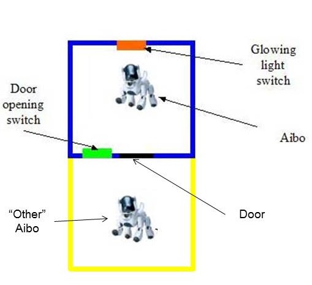
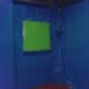
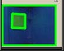

A Sony AIBO is placed into a dark blue room with the lights off. The room contains switches for turning on the lights and opening the door to the yellow room as seen here:
It's goal, is to somehow open the door and be reunited with the Aibo in the adjacent yellow room. In order to do this, it must turn on the lights and open the door. What you are witnessing is the behavior of the AIBO after several thousand observations using state of the art (in 2005) techniques in reinforcement learning. This is not a hard coded behavior. Only primitive actions like taking a step, turning , and head bobbing are pre-programmed. From those primitive motions, the Aibo has to string together a sequence of actions to maximize its reward signal, which is only received when it enters the adjacent room.
The AIBO sees images like this:
which are then processed using OpenCV to detect shapes like this:
Using the number, color, and location of shapes, the AIBO can determine where it is and how it needs to act in order to accomplish its goal.